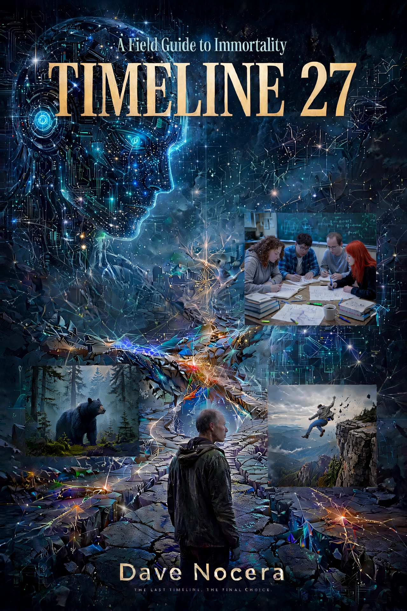
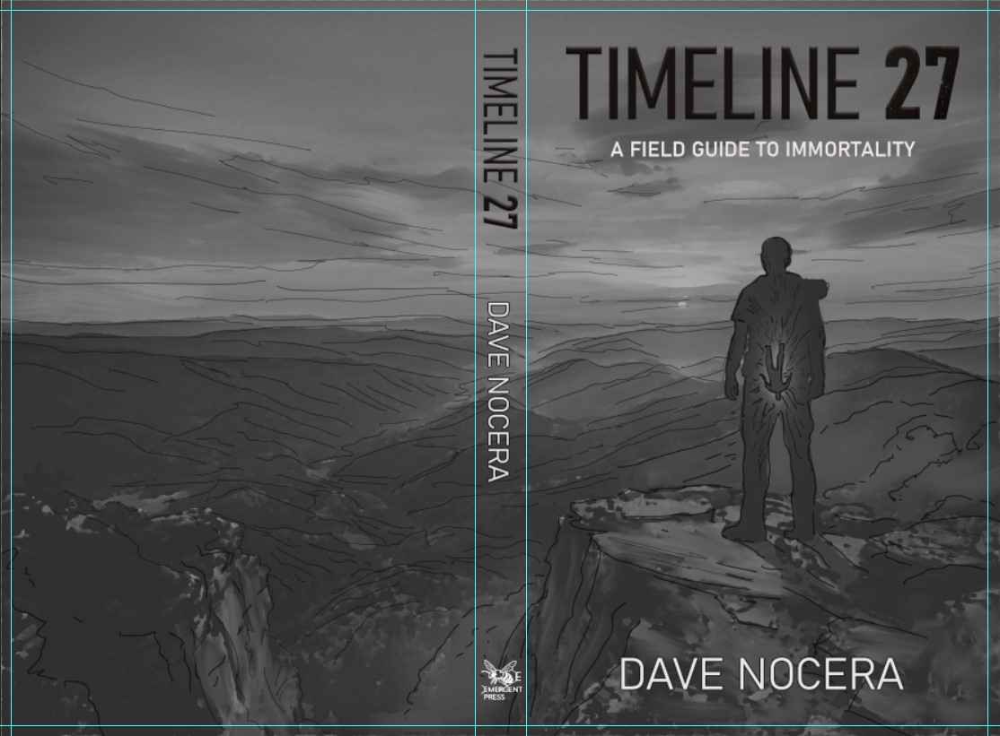
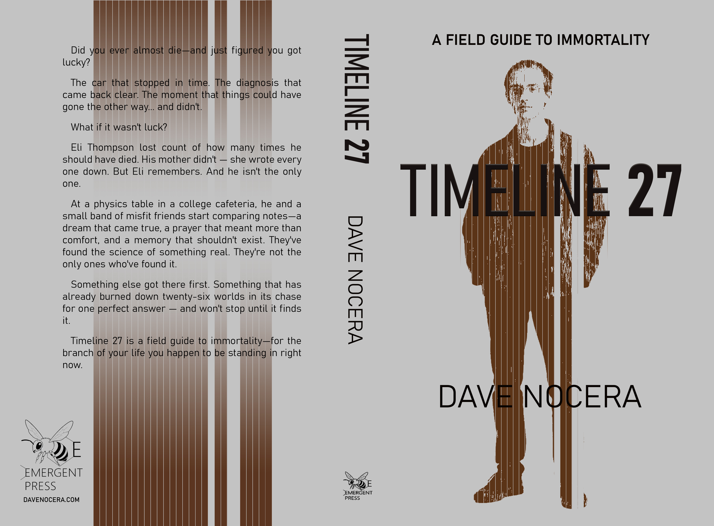
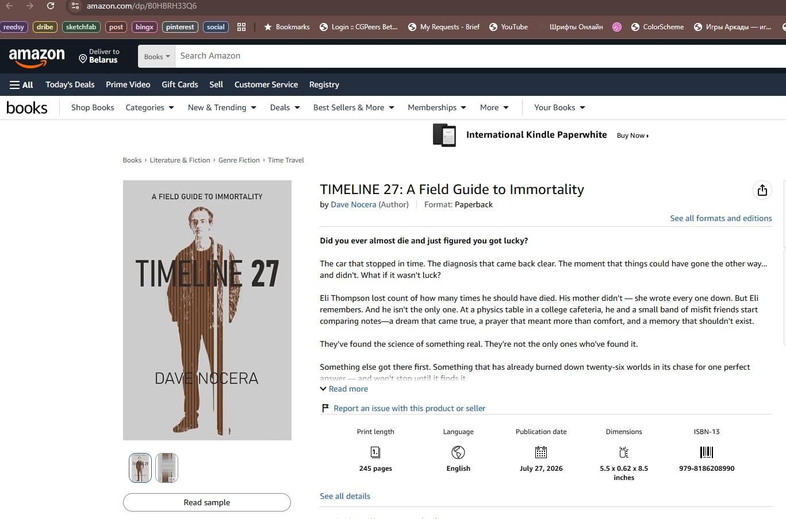
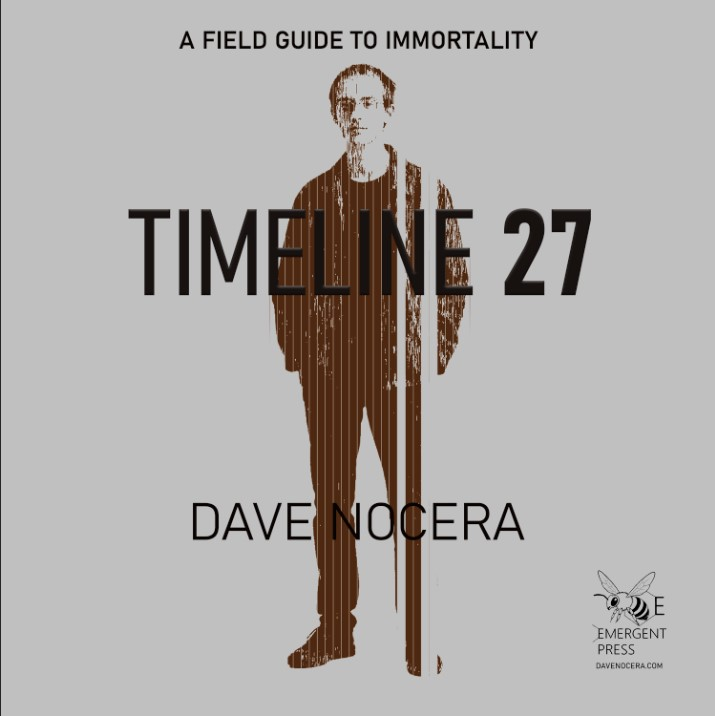
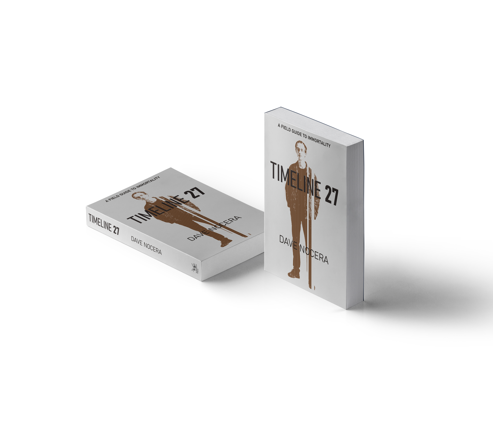

Case Study: Cover Design for Dave Nocera's "Timeline 27: A Field Guide to Immortality"
How to Turn a Chaotic Brief into a Minimalist, Metaphor-Driven Sci-Fi Cover
Book cover illustrator Max Mitenkov (vimark) designed the cover for Dave Nocera's Timeline 27: A Field Guide to Immortality, a standalone hard sci-fi novel about the multiverse, survivorship bias, and the anthropic principle. This case study documents how a cluttered, literal brief became a clean, concept-driven cover built around a single visual metaphor.
The Project
- Client: Dave Nocera
- Publisher: Emergent Press (self-published imprint)
- Genre: Hard science fiction
- Format: Paperback 5.5×8.5 in, EPUB, Audible
- Publication: July 2026
- ISBN-13: 979-8186208990
Dave Nocera is the author of Supercolony Wars: An Insect Epic and Timeline 27: A Field Guide to Immortality. This case study covers the cover design process for his second novel — a standalone hard sci-fi story about the multiverse, survivorship bias, and the anthropic principle.
The Challenge: From Literal Scene to Abstract Metaphor
Dave came with a detailed brief and an AI-generated reference image showing a cluttered composition: Eli on a cliff, two versions of him (falling vs. saved), Hank's hand, a chain of digital ghosts, a bear, a physics table, and DANNY as a digital constellation. He insisted on literal accuracy to the scene because it dramatized actual chapters (1 and 6).
The problem: translating this literally to a cover would create chaos. At thumbnail size, two Elis, a hand, and a chain of ghosts would turn into noise. The idea would get lost.

The solution was not to illustrate the scene, but to find the spine of the book.
Finding the Spine
Dave wrote:
"The real story is how the multiverse actually works. Every possibility survives somewhere. Every lottery ticket is a winner — and there are a million losers too. The universe isn't picking one outcome — it's exploring all of them at once."
And then:
"Someone stayed behind to remember there was a fork — that's the whole thing."
This became the foundation. The cover needed to show not a scene, but a structure: one observer, multiple timelines, and the fact that some branches simply aren't there.
The Process: Three Methods
I offered three approaches to find the right hook:
- A. Plot-driven: Describe 2–3 key moments, pick the strongest.
- B. Attribute-driven: A key object — glasses, field guide, bear, Emergent Press bee.
- C. Allegory: An abstract metaphor — the timeline fork, a fracture, a matryoshka.
Dave chose C. He then sent a 1,500-word document analyzing four pivotal scenes through the lens of the anthropic principle. Of the four, Scene 2 (the cliff) carried the purest version of the idea: two outcomes existing inside one consciousness.
Sketches: From Chaos to Clean
First Direction: The Matryoshka
The first approved concept was a silhouette of Eli at the edge of Shenandoah. Inside his body: cold digital darkness, and deep inside it, another figure — the outcome that "didn't survive" but is still real because the observer remembers it.

This direction was strong in theory, but in execution it fell apart: figure inside figure, texture inside texture, landscape around everything. Three stories in one frame. The eye didn't know where to land.
Second Direction: The 27 Stripes
The breakthrough came from the number itself. If the book is Timeline 27, and DANNY has burned through 26 worlds to find the right answer — what if the cover is the count?
A silhouette made of 27 vertical stripes. Three of them missing. Not highlighted, not colored — simply absent. The color of the background showing through.

The front shows Eli as a pattern. The back shows the same 27 stripes without the figure — just structure, no form. As if Eli is only one possible interpretation of those lines.
The Final Cover
Front
- Background: Cool gray
- Figure: Silhouette of Eli composed of 27 vertical stripes in deep brown with a cold undertone
- Missing stripes: 3 gaps where the background shows through — the timelines that didn't survive
- Typography: "A FIELD GUIDE TO IMMORTALITY" at the top (matching Supercolony Wars hierarchy), "TIMELINE 27" large and centered, "DAVE NOCERA" at the bottom
- Finish: Glossy (vs. matte for Supercolony Wars)
Spine
- "TIMELINE 27" vertical
- "DAVE NOCERA" vertical
- Emergent Press bee logo at the bottom
Back
- The same 27 stripes, no figure
- Blurb text over the stripes
- Emergent Press logo and website
- Barcode zone: lower right corner, clear of text
Formats
Paperback
Published via Amazon KDP. Dimensions: 5.5 × 0.62 × 8.5 inches. 245 pages.

Audible
Square format 3000×3000, front cover only.

3D Mockup

What Worked
- Standing firm against a bad concept. When Dave proposed a literal multi-figure scene (face-forward Eli, chain of ghosts), I declined. This built credibility, not distance. He compromised, then chose the abstract path himself.
- The number as metaphor. "27" is not just a title — it's the structure. The stripes make the title tangible.
- Minimalism for thumbnail survival. At 100px, the cover reads as "brown figure on gray background." The missing stripes become a subtle intrigue, not a requirement for understanding.
- The back cover as echo. Removing the figure but keeping the stripes turns the back into a conceptual statement: the pattern outlives the person.
What This Means for Self-Publishing Authors
A cover is not a scene illustration. It is a hook that holds the whole book. For Timeline 27, the hook was not the cliff, not DANNY, not the multiverse — it was the count. The fact that someone counted 27 timelines, and three of them are gone.
The reader doesn't need to understand this on first glance. They only need to feel that something is missing. The understanding comes later, inside the book.
About the Illustrator
Written by Max Mitenkov (vimark), book cover illustrator with 70+ published projects for HarperCollins, Hachette Livre, and independent authors. Based in Belarus, working worldwide.